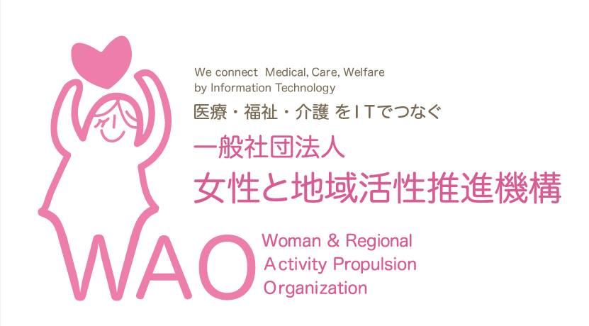
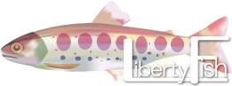

こんにちは世界！
Rails Girls が大阪にやってきます！二日間のワークショップの間に、Ruby on Railsのすてきな世界を体験してみませんか？ワークショップは無料です。
Hello world!
Rails Girls comes to Osaka! During the free two-day workshop we'll dive into the magical world of Ruby on Rails.
概要 コーチに教えてもらいながらプログラムを設計して、プロトタイプを作り、コーディングします。
必要なもの 自分のノートパソコン、やる気とキラリと光るイマジネーションを持ってきてください！
コーチのご応募ありがとうございました！ ご応募いただいたコーチ、スタッフのみなさまのご協力、本当にありがとうございました。みなさまのおかげで、すばらしいOsaka#1になりました。
| 19:30 - 21:00 |
インストール・デーまずは、参加者同士、お互いに知り合いになりましょう。ご自分のノートパソコンをお持ちください。 それぞれのパソコンにRubyとRailsをインストールし、Rubyプログラミングの最初の一歩をコーチとともに始めてみましょう。 |
|---|
| 9:00 - 9:30 |
レジストレーション |
|---|---|
| 9:30 - 9:45 |
オープニング |
| 9:45 - 12:00 |
ワークショップ |
| 12:00 - 13:00 |
ランチ |
| 13:00 - 13:30 |
ライトニングトークス その１ |
| 13:30 - 17:00 |
ワークショップ |
| 17:00 - 17:30 |
ライトニングトークス その２ |
| 18:00 - 20:00 |
アフター・パーティ参加者、コーチ、スタッフによるパーティです。ワークショップで聞き損ねたことやRubyやRailsのこと、ステップアップの方法など、コーチに気軽に質問してみましょう。 |
みなさまのおかげで、すばらしい RailsGirls Osaka#1 になりました。参加してくださったみなさまに大きな感謝と、これからのご活躍をお祈りしております！
会場:
株式会社アルメディア・ネットワーク 地図
大阪市西区西本町1丁目3番15号大阪建大ビル10F
Rails Girls Osaka はすばらしいパートナーとの共同開催です。（順不同）
 株式会社アルメディア・ネットワーク では技術者集団として開発・インフラネットワーク・医療情報の3分野にて顧客満足を私達の存在価値として日々業務に努めています。2010年よりRubyの取組を強化し、関西地方で”Rubyビジネス推進協議会”設立・運営に寄与貢献しています。そして今後はRubyコミュニティと一緒に成長して行きたい考えています。
株式会社アルメディア・ネットワーク では技術者集団として開発・インフラネットワーク・医療情報の3分野にて顧客満足を私達の存在価値として日々業務に努めています。2010年よりRubyの取組を強化し、関西地方で”Rubyビジネス推進協議会”設立・運営に寄与貢献しています。そして今後はRubyコミュニティと一緒に成長して行きたい考えています。
一般社団法人 女性と地域活性推進機構
わたくしたちは、医療・福祉・介護をＩＴでつなぎ、女性の再雇用の機会創出を最大のミッションとします。向上心と可能性を持った女性に対し、新しい価値を創造できる人材育成を行います。社会に貢献出来る女性の人材を送りだすことで、活力ある日本の未来づくりに取り組んでまいります。
 Herokuは Ruby、Java、Node.jsなど、複数のプログラミング言語に対応した世界で最も先進的なPaaSです。Herokuは開発者の生産性を最大限に引き出し、サーバーや実行環境の維持管理・アプリケーションのデプロイ・スケーラ ビリティへの考慮から解放し、開発に１００%集中できる環境を提供します。
Herokuは Ruby、Java、Node.jsなど、複数のプログラミング言語に対応した世界で最も先進的なPaaSです。Herokuは開発者の生産性を最大限に引き出し、サーバーや実行環境の維持管理・アプリケーションのデプロイ・スケーラ ビリティへの考慮から解放し、開発に１００%集中できる環境を提供します。
Rubyアソシエーションは、プログラミング言語Rubyの普及と発展のための非営利団体です。Ruby関連のプロジェクトやコミュニティ、ビジネスの関係を強化し、エンタープライズ領域におけるRubyの利用に関する諸問題の解決に取り組むことを目的とします。
KDDIウェブコミュニケーションズは、1997 年からホスティング専門事業者としてスタートした KDDI ウェブコミュニケーションズは、確かな技術と安定したサービスの提供により、ウェブサイト制作、ウェブアプリケーション開発会社をはじめ、大手企業、官公庁、外資系企業など、数多くのお客様に利用されてきました。15 年以上にわたって様々な構築・運用に携わり独自のノウハウを蓄積しているほか、KDDI グループならではの堅実なサービス運用を特色としています。
 クランディムは創意・熱意・誠意を持って、顧客・社会・未来に貢献し、「ありがとうを創造する」を理念として業務系アプリケーション、コンシューマー系アプリケーションの開発を行っている会社です。2012年からはRuby と Railsを取り入れてさらなる「ありがとう」創造したいと考えています。
クランディムは創意・熱意・誠意を持って、顧客・社会・未来に貢献し、「ありがとうを創造する」を理念として業務系アプリケーション、コンシューマー系アプリケーションの開発を行っている会社です。2012年からはRuby と Railsを取り入れてさらなる「ありがとう」創造したいと考えています。
 株式会社テクノプロジェクト
株式会社テクノプロジェクト
「笑顔をつなぐベストパートナー」をスローガンに、ITサービスを通じて笑顔が溢れる地域づくりを目指す企業です。「Ruby City MATSUE」に本社を構え、民間企業向けソフトウェア開発のみならず、医療分野や公共分野のサービス開発においても、Ruby on Railsを積極的に活用しています。
NTTコミュニケーションズは、オープンソースのPaaSソフトウェア「Cloud Foundry」を利用したPaaS「Cloudn PaaS」を提供しています。Ruby, Java, PHPを標準サポートしており、ベンダロックインリスクがありません。また、Cloudn PaaSは本番システムの運用基盤としてご利用いただくことにより、運用コストの削減が可能です。お客様の環境に幅広く適応するプラットフォームをNTTコミュニケーションズの基盤としてご提供いたします。
 株式会社インターネットイニシアティブ 私たちIIJは、MOGOKという少し変わった名前のRubyのPaaSを、国内のレスポンスのいい環境と安心の日本語サポートで提供しています。 MOGOKは「コンピュータに使われる人」ではなく「コンピュータを使う人」でありたいと願うすべてのRubyプログラマを支援します。
株式会社インターネットイニシアティブ 私たちIIJは、MOGOKという少し変わった名前のRubyのPaaSを、国内のレスポンスのいい環境と安心の日本語サポートで提供しています。 MOGOKは「コンピュータに使われる人」ではなく「コンピュータを使う人」でありたいと願うすべてのRubyプログラマを支援します。
 Kumu LLC. 思い入れのある製品を生み出す時、時間をかけて成熟した完全な状態で世の中に出そうとしていませんか？小さく生み出して、早く使用してみて、利用者のフィードバックをもとに着実に育てていく、それがこれからのビジネスの一つの形ではないでしょうか？そんな皆様とチームを組み「生み出す×育てる」パートナーとなりたい。それが、私たちKumuの思いです。
Kumu LLC. 思い入れのある製品を生み出す時、時間をかけて成熟した完全な状態で世の中に出そうとしていませんか？小さく生み出して、早く使用してみて、利用者のフィードバックをもとに着実に育てていく、それがこれからのビジネスの一つの形ではないでしょうか？そんな皆様とチームを組み「生み出す×育てる」パートナーとなりたい。それが、私たちKumuの思いです。
 日本Rubyの会は、Rubyの利用者の支援とRuby(とRubyのライブラリ)開発者の支援を目的とした一般社団法人です。現在は、ドキュメントの整備や、イベントへの参加協力等を中心に活動しています。
日本Rubyの会は、Rubyの利用者の支援とRuby(とRubyのライブラリ)開発者の支援を目的とした一般社団法人です。現在は、ドキュメントの整備や、イベントへの参加協力等を中心に活動しています。
 株式会社Ruby開発は、Rubyに興味を持ったエンジニアが多数在籍している会社です。弊社に入社してからRubyに初めて触れるエンジニアも多くいます。また、他社様とはひと味違ったエンジニア層が多いのも弊社の特徴です。現在そのエンジニア達が中心となって、とある自社プロジェクトも推進中です（乞うご期待！）。今後益々利用範囲が広まるであろうRuby言語と共に成長を目指します。
株式会社Ruby開発は、Rubyに興味を持ったエンジニアが多数在籍している会社です。弊社に入社してからRubyに初めて触れるエンジニアも多くいます。また、他社様とはひと味違ったエンジニア層が多いのも弊社の特徴です。現在そのエンジニア達が中心となって、とある自社プロジェクトも推進中です（乞うご期待！）。今後益々利用範囲が広まるであろうRuby言語と共に成長を目指します。
リバティ・フィッシュはRubyを はじめとするオープンソースソフトウエアでの開発を得意とするソフトハウスです。ITの利活用が期待される医療介護分野での市場開拓・確立を視野に、技術力とノウハウで勝負するオンリーワン企業を目指しています。当社は早期からRubyの 可能性を認め、エンジニアの育成にも注力してまいりました。Ruby開発のパイオニアとして、今後もRubyエ ンジニアを支援してまいります。
参加費はどのくらいかかりますか？ 無料です。申し込むときにはわくわくした気持ちだけあればいいです。
どのような人が参加するのでしょうか？ コンピュータを使ったことがある女性ならだれでも参加できます。 これまでに開催されたRails Girlsイベントには様々な年齢の女性がやってきました。 ご自分のノートパソコンをお持ちください。
男性も参加できますか？ 参加できます。ただし、必ずウェブアプリを作りたがっている女性と一緒に参加してください。 申し込み人数が多い場合はお断りすることがあります。
プログラミングの経験があります。手伝うことはできますか？ 今回のコーチ、スタッフの募集は締め切らせていただきました。次回また開催のときにはどうぞよろしくお願いいたします。
メールでのお問い合わせ こちらのメールアドレス宛にお問い合わせください。